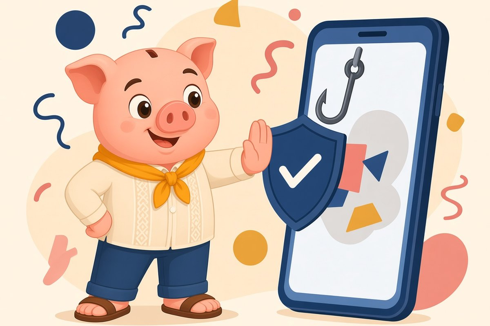

"Your account is locked"
May text na may link, mukhang galing sa bangko mo.
Safety, free lesson
Hindi ka tanga kapag na-scam. Magaling lang talaga sila mag-panggap. Kaya alamin natin ang galaw nila.
Scammers use the same handful of tricks in new costumes. Learn the patterns, verify through official channels, and report. Sources from BSP, SEC and the CICC are listed below.
Piso Wais, published

Sound familiar?
May text na may link, mukhang galing sa bangko mo.
May tumawag, kilala ang pangalan mo, humihingi ng code.
May nag-alok ng investment na sigurado raw ang kita.
Bayad muna bago ma-release ang loan, parcel o premyo.
Lesson 1 Free
Lesson 2 Free
BSP's consumer guide says banks and financial institutions will not ask for personal information, account details or passwords by email, and that you should call your bank directly to verify. Treat any request for OTP, PIN or password as a red flag, whoever it claims to be.
Example Lito in Pampanga gets a call: "Sir, from your bank po, may suspicious transaction, paki-read ng code." He hangs up, opens his banking app himself, and calls the number printed on his card.
Lesson 3 Free
Under the AFASA rules in BSP's booklet, banks and supervised institutions must not send clickable links or QR codes by email, messaging apps or SMS, except in limited cases, for example when you started the action or the link only gives information. Open the official app or type the address yourself.
Lesson 4 Free
The SEC regularly issues advisories against entities that solicit investments from the public without authority, often with promises of high or "sure" returns. Check the SEC website for advisories and registration before you put in any money.
Lesson 5 Free
Act fast. Call your bank or e-wallet through its official hotline to block or report. Then report to the Inter-Agency Response Center hotline 1326, operated by DICT, CICC, NPC and NTC with PNP and NBI as enforcement arms. Keep screenshots, numbers, and reference numbers.
Quick quiz, 3 minutes
One question per screen, no sign-up, answers stay on your phone.
Take the quizYour next step
Credit card rules, idle money ladder, 30-day cash flow plan.
Get the free cheat sheetPlanned worksheets and templates. Not available yet, nothing to buy.
A guided check of where your money leaks. Coming later.
Not necessarily. Scammers can get names from leaks or social media. Verify through the official app or hotline.
Close it, do not enter anything, and watch your accounts. If you entered details, call your bank right away.
Sometimes, depending on the case and how fast you report. Report to your bank and to 1326 as soon as possible.
Educational only, not financial advice. Rates and rules change, check the official source.